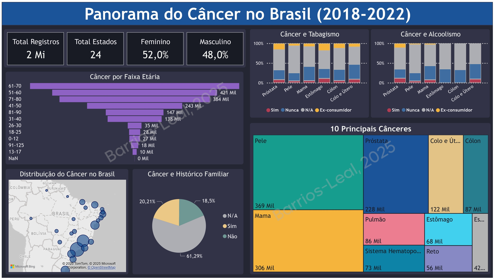

Panorama do Câncer no Brasil (2018-2022)
O conjunto de dados foi obtido a partir do Registros Hospitalares de Câncer do Instituto Nacional de Câncer (Integrador RHC),
totalizando 1.987.418 registros e abrangendo o período de 2018 a 2022. Acesso em: 05/11/2024.
Insights principais:
- Os três tipos de câncer mais comuns são os de pele, mama e próstata.
- Os estados com maior número de casos registrados são São Paulo, Minas Gerais e Rio Grande do Sul.
- As três faixas etárias com maior incidência estão entre 60 e 80 anos.
- Em relação ao histórico familiar, tabagismo e alcoolismo, não há resultados conclusivos devido à alta quantidade de dados não registrados. Isso pode ocorrer tanto por falta de informação quanto por ausência de avaliação, resultando em dados perdidos. No entanto, parece que a porcentagem de pessoas que nunca consumiram álcool ou tabaco é maior do que a daqueles que consumiram ou são ex-consumidores.
